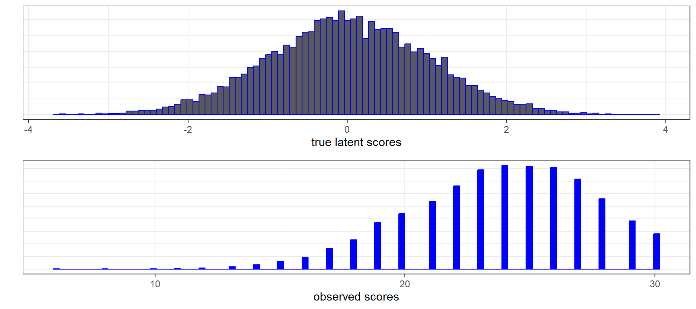
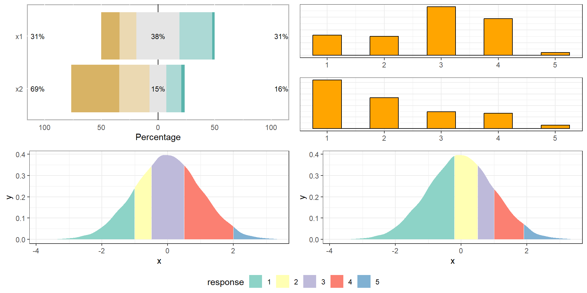
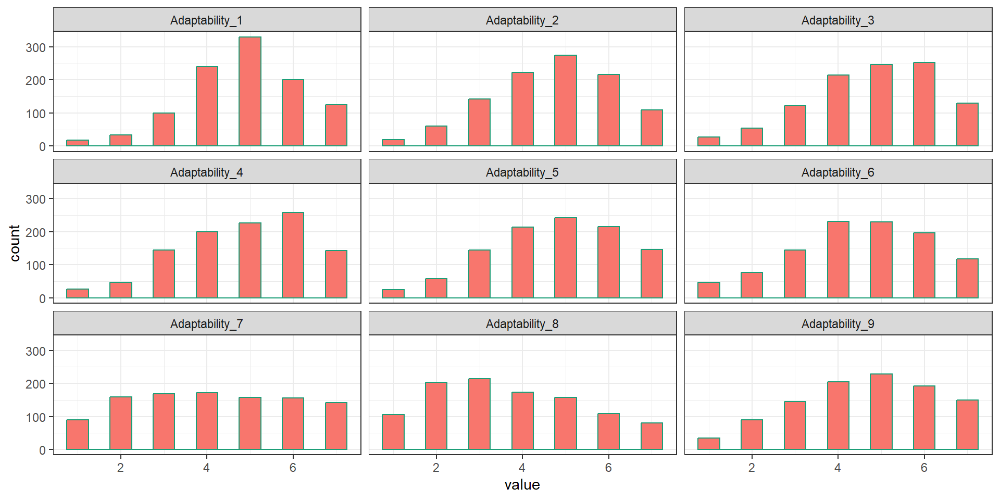
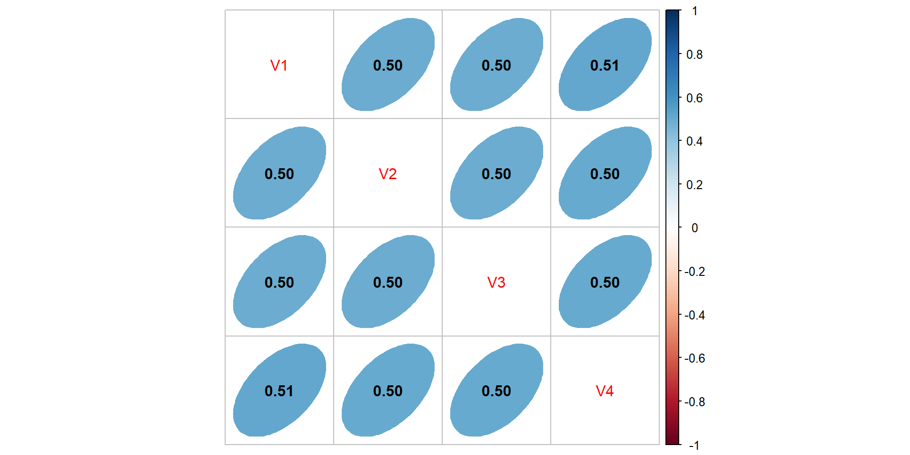
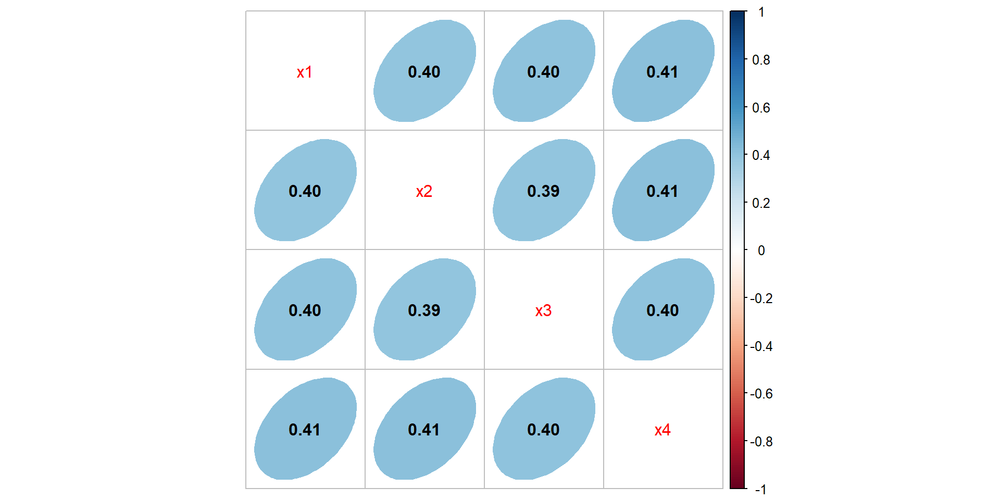

set.seed(42); n=10000; items = 30;
score <- rbinom(n,items, rnorm(n,.80,.10))SEM with ordinal variables
Ordinal indicators: thresholds, DWLS/WLSMV, and invariance
Tommaso Feraco
Today in the workflow
Specify → Identify → Estimate → Evaluate → Revise/Report
Today: extending SEM to ordinal (ordered-categorical) indicators:
thresholds, polychoric correlations, DWLS/WLSMV (and ULS), and what changes in model fit and invariance.
Learning objectives
By the end of this session you should be able to:
- Explain the latent-response view of ordinal items and the role of thresholds
- Know when treating Likert items as continuous is risky (few categories / skewed distributions)
- Fit ordinal CFA/SEM in lavaan using
ordered=and appropriate estimators (DWLS/WLSMV/ULS) - Understand how (and why) global fit indices behave differently with ordinal data
- Run MG-CFA invariance with ordinal indicators (thresholds first, then loadings)
Introduction
In psychology we rarely have data that are normally distributed or that follow a continuous distribution. Our data are probably ordinal or the consequence of ordinal/dichotomous processes:
COMMENTS?
Introduction
However, we postulate that they are generated from continuous normal latent distributions
COMMENTS?
Likert scales
This also applies to Liker scales, where the difference between reporting a score of 1 or 2, and the difference between reporting a score of 2 or 3 is not the same!
The adaptability data
And in real data they are often not normally distributed
Wrong correlations
Unfortunately, when we use data that follow discrete distributions and treat them as they were continuous, we can fail to recreate true correlation matrices accurately. That’s why you usually use polychoric correlations with dichotomous or ordinal variables.


Data were generated from a multivariate normal distribution using MASS::mvrnorm and then manually truncated on a 3-point scale
This, of course, has consequences on SEM parameters, which are based on covariance
In lavaan and SEM
To estimate a model treating items/observations as ordinal data, we need to change the estimationd method
MLis not always accurate with ordinal data (especially with few categories)lavaan, whenorderedisTRUE, automatically useWLSMV(diagonally weighted least squares)- A great alternative is
ULS, but has more convergence problems - We can also use robust ML alternatives, like
MLR - Other available estimators: lavaan tutorial on estimators (see here)
How to fit a CFA with ordinal data
# THE MODEL IS SPECIFIED AS USUAL
mOrd <- "
cb =~ Adaptability_1 + Adaptability_2 + Adaptability_3 +
Adaptability_4 + Adaptability_5 + Adaptability_6
em =~ Adaptability_7 + Adaptability_8 + Adaptability_9
em ~~ cb
"
# WE JUST NEED TO ADD
fitOrd <- sem(mOrd, D.ad, std.lv=T,
estimator = "ULS", # optional
ordered = colnames(D.ad)) # the list of ord vars
# ordered = T) # or just "TRUE" if all ordered Results (1)
lavaan 0.6-19 ended normally after 16 iterations
Estimator ULS
Optimization method NLMINB
Number of model parameters 64
Used Total
Number of observations 1044 1083
Model Test User Model:
Test statistic 73.746
Degrees of freedom 26
P-value (Unknown) NA
Parameter Estimates:
Parameterization Delta
Standard errors Standard
Information Expected
Information saturated (h1) model Unstructured
[...]Results (2)
[...]
Latent Variables:
Estimate Std.Err z-value P(>|z|) Std.lv Std.all
cb =~
Adaptability_1 0.659 0.021 30.831 0.000 0.659 0.659
Adaptability_2 0.659 0.021 30.841 0.000 0.659 0.659
Adaptability_3 0.664 0.021 30.983 0.000 0.664 0.664
Adaptability_4 0.551 0.020 26.957 0.000 0.551 0.551
Adaptability_5 0.619 0.021 29.486 0.000 0.619 0.619
Adaptability_6 0.553 0.020 27.012 0.000 0.553 0.553
em =~
Adaptability_7 0.642 0.026 24.949 0.000 0.642 0.642
Adaptability_8 0.671 0.026 25.513 0.000 0.671 0.671
Adaptability_9 0.699 0.027 25.983 0.000 0.699 0.699
Covariances:
Estimate Std.Err z-value P(>|z|) Std.lv Std.all
cb ~~
em 0.587 0.022 26.729 0.000 0.587 0.587
[...]Results (3)
[...]
Thresholds:
Estimate Std.Err z-value P(>|z|) Std.lv Std.all
Adaptblty_1|t1 -2.114 0.031 -68.285 0.000 -2.114 -2.114
Adaptblty_1|t2 -1.647 0.031 -53.181 0.000 -1.647 -1.647
Adaptblty_1|t3 -1.056 0.031 -34.089 0.000 -1.056 -1.056
Adaptblty_1|t4 -0.320 0.031 -10.331 0.000 -0.320 -0.320
Adaptblty_1|t5 0.495 0.031 15.982 0.000 0.495 0.495
Adaptblty_1|t6 1.181 0.031 38.145 0.000 1.181 1.181
Adaptblty_2|t1 -2.071 0.031 -66.899 0.000 -2.071 -2.071
Adaptblty_2|t2 -1.421 0.031 -45.908 0.000 -1.421 -1.421
Adaptblty_2|t3 -0.794 0.031 -25.642 0.000 -0.794 -0.794
Adaptblty_2|t4 -0.188 0.031 -6.084 0.000 -0.188 -0.188
Adaptblty_2|t5 0.492 0.031 15.895 0.000 0.492 0.492
Adaptblty_2|t6 1.257 0.031 40.590 0.000 1.257 1.257
Adaptblty_3|t1 -1.930 0.031 -62.322 0.000 -1.930 -1.930
Adaptblty_3|t2 -1.415 0.031 -45.696 0.000 -1.415 -1.415
Adaptblty_3|t3 -0.858 0.031 -27.715 0.000 -0.858 -0.858
Adaptblty_3|t4 -0.250 0.031 -8.070 0.000 -0.250 -0.250
Adaptblty_3|t5 0.350 0.031 11.316 0.000 0.350 0.350
Adaptblty_3|t6 1.162 0.031 37.529 0.000 1.162 1.162
[...]Results (4)
[...]
Adaptblty_4|t1 -1.962 0.031 -63.351 0.000 -1.962 -1.962
Adaptblty_4|t2 -1.476 0.031 -47.680 0.000 -1.476 -1.476
Adaptblty_4|t3 -0.817 0.031 -26.393 0.000 -0.817 -0.817
Adaptblty_4|t4 -0.257 0.031 -8.310 0.000 -0.257 -0.257
Adaptblty_4|t5 0.295 0.031 9.518 0.000 0.295 0.295
Adaptblty_4|t6 1.094 0.031 35.332 0.000 1.094 1.094
Adaptblty_5|t1 -1.978 0.031 -63.891 0.000 -1.978 -1.978
Adaptblty_5|t2 -1.408 0.031 -45.486 0.000 -1.408 -1.408
Adaptblty_5|t3 -0.781 0.031 -25.219 0.000 -0.781 -0.781
Adaptblty_5|t4 -0.196 0.031 -6.321 0.000 -0.196 -0.196
Adaptblty_5|t5 0.397 0.031 12.812 0.000 0.397 0.397
Adaptblty_5|t6 1.081 0.031 34.912 0.000 1.081 1.081
Adaptblty_6|t1 -1.705 0.031 -55.076 0.000 -1.705 -1.705
Adaptblty_6|t2 -1.186 0.031 -38.302 0.000 -1.186 -1.186
Adaptblty_6|t3 -0.654 0.031 -21.106 0.000 -0.654 -0.654
Adaptblty_6|t4 -0.055 0.031 -1.784 0.074 -0.055 -0.055
Adaptblty_6|t5 0.519 0.031 16.776 0.000 0.519 0.519
Adaptblty_6|t6 1.211 0.031 39.097 0.000 1.211 1.211
[...]
[...]Thresholds (1)
- We can assume that a discrete variable \(x\) (expressed with \(k\) ordered categories) represents an approximation of a continuous latent variable \(\xi\), normally distributed with mean 0.
- Therefore, when we observe \(x = i\), it means that the true corresponding value \(\xi\) is ranging between two values, i.e.
\[ \alpha_{i-1} < \xi \leq \alpha_i \] where \(\alpha_0 = - \infty, \alpha_1 < \alpha_2 < \dots < \alpha_{k-1}\) e \(\alpha_k = +\infty\) are the thresholds - Consequenlty we will have that, given a discrete ordered variable with \(k\) possible values, there are \(k - 1\) unknown thresholds.
Thresholds (2)
Thresholds represent the link between the (continuous) latent variable \(\xi\) and the observed values (on a discrete scale).
For example, the item Adaptability_1
[1] -2.11 -1.65 -1.06 -0.32 0.49 1.18That we can manually compute as:
Results (5)
[...]
Variances:
Estimate Std.Err z-value P(>|z|) Std.lv Std.all
.Adaptability_1 0.566 0.566 0.566
.Adaptability_2 0.565 0.565 0.565
.Adaptability_3 0.559 0.559 0.559
.Adaptability_4 0.696 0.696 0.696
.Adaptability_5 0.616 0.616 0.616
.Adaptability_6 0.695 0.695 0.695
.Adaptability_7 0.588 0.588 0.588
.Adaptability_8 0.550 0.550 0.550
.Adaptability_9 0.511 0.511 0.511
cb 1.000 1.000 1.000
em 1.000 1.000 1.000
[...]Model fit
This works as usual
npar df chisq
64.00000 26.00000 73.74574 cfi tli nnfi agfi
0.9883022 0.9838030 0.9838030 0.9964375 srmr rmsea bic aic
0.03963876 0.04196029 NA NA BUT YOU CANNOT INTERPRET THEM AS WE USED TO DO!
Model fit, references
Some references for model fit with ordinal data:
- RMSEA (doi:10.1080/10705511.2019.1611434) tends to reject models with large datasets and 5-point scales
- CFI and TLI tend to overestimate model fit
- SRMR seems to be less biased
But there are many contradictory suggestions and it is not easy to navigate them. Look for what you need as simulation studies depend on many variables.
This (doi:10.1027/2698-1866/a000034) might be a helpful summary/reflection.
Reviewer 2

Data quality checks (before fitting)
Before you run WLSMV / ordinal CFA, check:
- Category frequencies
Any category with very few responses? (e.g., < 5% or tiny counts) - Empty / near-empty pairs
Some item pairs may have empty cells in their K×K tables → unstable polychorics - Extreme skew / floor–ceiling
Items with almost everyone in the same category carry little information - Too many categories for N
Many categories + modest sample size → sparse tables and unstable estimation
If you see sparse categories, consider collapsing adjacent categories (with a substantive rationale).
What to do if categories are sparse
Options (in order of “least invasive”):
Collapse adjacent categories (e.g., merge 1–2 or 4–5)
- do it consistently across groups/time if you’ll test invariance
Drop an item that is essentially constant or unusable
Collect more data (sparse tables are fundamentally a sample-size problem)
Avoid “data-driven collapsing” that changes the construct meaning. Document the decision clearly.
MG-CFA-ordinal
Prerequisites
When we test multigroup invariance with ordinal data we assume that the THRESHOLDS are also equal between the two groups, but before running the analysis, remember:
- the number of parameters is higher than with continuous data…and you split the data in two or more parts! Be sure you have enough data in each group
- all the observed indicators hold the same categories in each group, otherwise you cannot fit the model
Steps
The steps that you should follow fo MG-CFA with ordinal data are slightly different:
- Baseline model, as the configural model
- Equal thresholds model, you should start by forcing the thresholds to be equal across groups
- Equal loadings and thresholds model, only now you can fix the loadings to be equal across groups
In R
I use again the adaptability items. I manually added a group variable.
D.ad$group <- c(rep("G1", 428), rep("G2", 1083-428))
# 1. FIT THE BASELINE/CONFIGURAL MODEL
fConf <- sem(mOrd, D.ad, std.lv=T, estimator = "ULS",
ordered = T, group = "group")
# 2. FIT THE FIXED THRESHOLDS MODEL
fTresh<- sem(mOrd, D.ad, std.lv=T, estimator = "ULS",
ordered = T, group = "group",
group.equal = c("thresholds"))
# 3. FIT THE FIXED LOADINGS MODEL
fLoad <- sem(mOrd, D.ad, std.lv=T, estimator = "ULS",
ordered = T, group = "group",
group.equal = c("thresholds", "loadings"))Model fit comparison
| npar | df | chisq | cfi | tli | nnfi | agfi | srmr | rmsea | bic | aic | |
|---|---|---|---|---|---|---|---|---|---|---|---|
| baseline | 128 | 52 | 91.652 | 0.990 | 0.987 | 0.987 | 0.996 | 0.044 | 0.038 | NA | NA |
| thresholds | 85 | 95 | 166.552 | 0.983 | 0.987 | 0.987 | 0.996 | 0.044 | 0.038 | NA | NA |
| loadings | 78 | 102 | 173.785 | 0.983 | 0.988 | 0.988 | 0.996 | 0.046 | 0.037 | NA | NA |
Model results
Group 1
|
Group 2
|
|||||||
|---|---|---|---|---|---|---|---|---|
| lhs | op | rhs | est | || | lhs | op | rhs | est |
| Loadings | ||||||||
| cb | =~ | Adaptability_1 | 0.69 | || | cb | =~ | Adaptability_1 | 0.64 |
| cb | =~ | Adaptability_2 | 0.69 | || | cb | =~ | Adaptability_2 | 0.64 |
| cb | =~ | Adaptability_3 | 0.70 | || | cb | =~ | Adaptability_3 | 0.64 |
| cb | =~ | Adaptability_4 | 0.54 | || | cb | =~ | Adaptability_4 | 0.56 |
| cb | =~ | Adaptability_5 | 0.66 | || | cb | =~ | Adaptability_5 | 0.59 |
| cb | =~ | Adaptability_6 | 0.65 | || | cb | =~ | Adaptability_6 | 0.49 |
| em | =~ | Adaptability_7 | 0.66 | || | em | =~ | Adaptability_7 | 0.63 |
| em | =~ | Adaptability_8 | 0.67 | || | em | =~ | Adaptability_8 | 0.67 |
| em | =~ | Adaptability_9 | 0.73 | || | em | =~ | Adaptability_9 | 0.67 |
| Latent covariance | ||||||||
| cb | ~~ | em | 0.62 | || | cb | ~~ | em | 0.56 |
| Thresholds | ||||||||
| Adaptability_1 | | | t1 | -2.13 | || | Adaptability_1 | | | t1 | -2.11 |
| Adaptability_1 | | | t2 | -1.69 | || | Adaptability_1 | | | t2 | -1.62 |
| Adaptability_1 | | | t3 | -1.06 | || | Adaptability_1 | | | t3 | -1.05 |
| Adaptability_1 | | | t4 | -0.36 | || | Adaptability_1 | | | t4 | -0.30 |
| Adaptability_1 | | | t5 | 0.52 | || | Adaptability_1 | | | t5 | 0.48 |
| Adaptability_1 | | | t6 | 1.14 | || | Adaptability_1 | | | t6 | 1.21 |
Additional materials
- Svetina et al. (doi:10.1080/10705511.2019.1602776) tutorial, suggestions, and model fit recommendations for MG-CFA with ordinal data
- Enrico Perinelli held a
psicostatmeeting on the topic following Svetina et al.’s code
Exercises → Lab
Open and work through:
labs/lab08_ordinal_sem_invariance.qmd
Focus on:
- fitting the same CFA/SEM treating items as continuous vs ordered
- inspecting thresholds and (polychoric) correlations
- MG-CFA steps with ordinal indicators (thresholds → thresholds + loadings)
Take-home summary
Three things to remember:
- Ordinal items are usually modeled via an underlying continuous latent response + thresholds
- Estimation changes (DWLS/WLSMV/ULS), and fit indices are not “plug-and-play” as in ML for continuous data
- With ordinal MG-CFA, threshold invariance is a key early step (often before loadings)
Further reading
- Svetina et al. tutorial + simulation-based guidance for ordinal MG-CFA
- Simulation papers on fit indices with ordinal data (RMSEA/CFI/TLI/SRMR)
(See the “Additional materials” slide for links.)